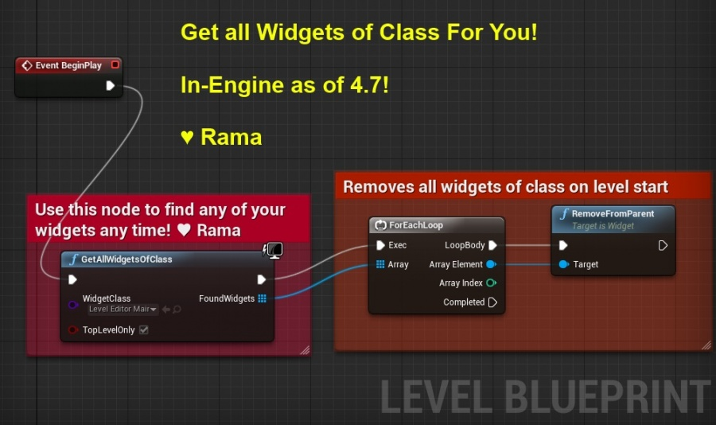

Clear Widgets When Switching Levels
Contents
Overview
This tutorial is a quick and easy workaround for removing UMG widgets when travelling between levels in Multiplayer. Currently, Widgets are not destroyed automatically when opening or closing levels, so trying to Server Travel a group of players will put them the game, but their screen will still display the old widget(s), with no easy way to remove them!
The Code
The code for this is extremely simple, all you need is a custom Gamemode and a custom PlayerController.
Player Controller
In our Custom Player Controller, we need to declare a new Client function (call it something useful!) that will be called when our Player is travelling to a new level. It's a simple Object Iterator that checks for any widgets in the Players World, and removes them.
Note that because we're using the new GENERATED_BODY() Macro, we must declare the previously auto-generated Server/Client virtual functions now.
MyPlayerController.h
UCLASS()
class GESGAME_API AMyPlayerController : public APlayerController
{
GENERATED_BODY()
public:
UFUNCTION(Client, Reliable, Category = "Things")
void ClearHUDWidgets();
virtual void ClearHUDWidgets_Implementation();
};
MyPlayerController.cpp
void AMyPlayerController::ClearHUDWidgets_Implementation()
{
/* Object Iterator for All User Widgets! */
for (TObjectIterator<UUserWidget> Itr; Itr; ++Itr)
{
UUserWidget* LiveWidget = *Itr;
/* If the Widget has no World, Ignore it (It's probably in the Content Browser!) */
if (!LiveWidget->GetWorld())
{
continue;
}
else
{
LiveWidget->RemoveFromParent();
}
}
}
GameMode
The GameMode change is very minimal. If you haven't already, create a declaration for 'ProcessClientTravel'. It's an existing function within the GameMode, so you'll want to override it like so:
MyGameMode.h
UCLASS()
class GESGAME_API AMyGameMode : public AGameMode
{
GENERATED_BODY()
public:
virtual APlayerController* ProcessClientTravel(FString& FURL, FGuid NextMapGuid, bool bSeamless, bool bAbsolute) override;
};
Now we're going to add some additional functionality into this GameMode. Unfortunately, we can't just call Super on it, because we need to inject some functionality right in the middle of the existing code. We'll have to copy-paste the code from the function in to start with, then add our modifications. The final code should look like this:
MyGameMode.cpp
APlayerController* AMyGameMode::ProcessClientTravel(FString& FURL, FGuid NextMapGuid, bool bSeamless, bool bAbsolute)
{
// We call PreClientTravel directly on any local PlayerPawns (ie listen server)
APlayerController* LocalPlayerController = NULL;
for (FConstPlayerControllerIterator Iterator = GetWorld()->GetPlayerControllerIterator(); Iterator; ++Iterator)
{
APlayerController* PlayerController = *Iterator;
if (Cast<UNetConnection>(PlayerController->Player) != NULL)
{
/* Check if we're using our Custom Controller */
AMyPlayerController* MyController = Cast<AMyPlayerController>(PlayerController);
if (MyController )
{
MyController ->ClearHUDWidgets();
}
// REMOTE PLAYER
PlayerController->ClientTravel(FURL, TRAVEL_Relative, bSeamless, NextMapGuid);
}
else
{
// LOCAL PLAYER
/* Check if we're using a GES Controller */
AMyPlayerController* MyController = Cast<AMyPlayerController>(PlayerController);
if (MyController )
{
MyController ->ClearHUDWidgets();
}
LocalPlayerController = PlayerController;
PlayerController->PreClientTravel(FURL, bAbsolute ? TRAVEL_Absolute : TRAVEL_Relative, bSeamless);
}
}
return LocalPlayerController;
}
All we're doing is casting the Controller to our custom one, and calling ClearHUDWidgets() on it BEFORE it starts to transition to the next level.
You'll also be able to see from the comments that this works for both Local & Remote players, so should also work in Singleplayer!
Get All Widgets of Class
Author ( )
I submitted a pull request that Epic accepted precisely to make this process easier!
You can simply run the blueprint node "Get All Widgets of Class" and then use a for each and remove all the widgets from the viewport.
The advantage of this is that it can be done client side very easily (game mode is server only) and does not require any C++.

Get All Widgets of Class is a static BP node, so you can use this in any blueprint you want!
Top-Level Only allows you to specify whether my node should only return widgets that are directly connected to the viewport, or whether to return alllll widgets even if they are subwidgets of a viewport widget!
I hope this makes this whole process of removing UMG widgets between levels even easier!
( )
PS: Special thanks to TheJamsh for creating this wiki to address this issue for all time to come!
Final Word
Hope this helps!
( )